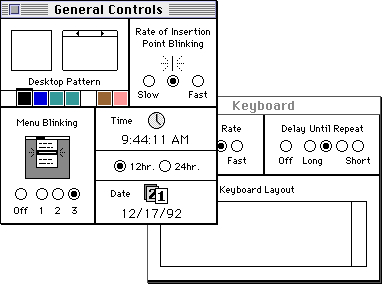
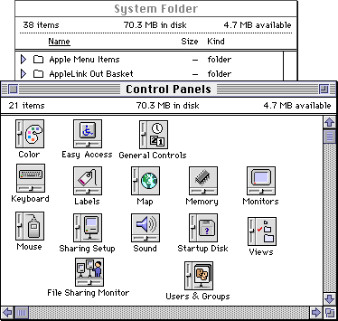

Legacy Document
Important: The information in this document is obsolete and should not be used for new development.
Important: The information in this document is obsolete and should not be used for new development.


Control Panels
A control panel manages the settings of a systemwide feature, such as the amount of memory allocated to a disk cache, the volume of the speaker, or the picture displayed by a screen saver. A control panel can also allow the user to set a global value, such as the highlight color. On the screen, a control panel appears as a modeless dialog box with controls that let users specify basic settings and preferences for the feature. A control panel file (a file of type'cdev') contains the required resources that implement the feature and define the look of the control panel's user interface, including its icon. A control panel file also contains any optional resources needed to implement the feature.Among the required resources in a control panel file is a code resource that consists of a control device function. A control device function, also referred to as a
cdevfunction, implements the features of the control panel and performs any services offered by the control panel. Control device functions interact and communicate with the Finder. The Finder provides a number of services for control device functions, including interfacing with the Dialog Manager to create and manage each control panel's dialog box.A control panel allows the user to modify whatever settings the particular control panel supports. A user opens a control panel from the Finder. Each control panel appears in its own dialog box. Because each control panel is an independent executable file, more than one control panel can remain open at a time, and the user can move among them or run another application while one or more control panels are open. Figure 8-1 shows two control panels open on the desktop. Like other windows, control panels can be dragged on the desktop. The frontmost control panel is the active one.
Figure 8-1 Two control panels, each with its own window
 You cannot define your own menus for a control panel, but the user can use most of the Finder's Edit menu commands while working in the control panel. When your control panel is active and the user chooses a command from the Edit menu, the Finder passes the Undo, Cut, Copy, Paste, or Clear commands to your control device function for processing. Your control device function can respond to these messages from the Finder when it is appropriate to do so; for example, if your control panel has an editable text item, your function should respond to editing commands.
Many standard control panels are provided with the system software. For example, the Sound control panel lets the user specify the volume and type of alert sound. The Mouse control panel lets the user define the speed of the onscreen cursor relative to movement of the mouse; the user can also set the double-click speed. The Startup Disk control panel lets the user specify the boot drive.
Figure 8-2 shows the General Controls control panel, which lets the user set the Finder's desktop color and pattern, the blinking rate of the insertion point, the number of times a menu item blinks once the user chooses it, and the time and date.
Figure 8-2 The General Controls control panel
A Control Panel's Resources
A control panel file must contain certain required resources. In addition to these, your control panel can include optional resources. You can also create any other types of resources that your control device function needs and include them in the control panel file. The resources you provide in your control panel file must adhere to conventions governing the resource ID numbers; see "Resource IDs for Control Panels" on page 8-14 for information on these conventions. These are the required resources:
Although it is not required, you can also include a font information (
- A rectangle positions (
'nrct') resource. This resource specifies the number of rectangles that make up the display area of your control panel and a list of the coordinates defining the position for each rectangle. (Your control panel interface can have one or more rectangles containing the controls that let the user set and change values or otherwise manipulate the feature the control panel governs.)- An item list (
'DITL') resource. This resource specifies the items in your control panel. You can specify in this resource items such as static text, buttons, checkboxes, radio buttons, editable text, user items, icons, QuickDraw pictures, and other types of controls, such as pop-up menus.- A machine (
'mach') resource. This resource specifies the types of systems on which your control panel can run.- A black-and-white icon list (
'ICN#') resource and other resources associated with an icon family. These resources define the icon for your control panel file. The icon family resources are'ICN#','ics#','icl8','icl4','ics8', and'ics4'. See the chapter "Finder Interface" in Inside Macintosh: Macintosh Toolbox Essentials for information on how to create an icon family.- A bundle (
'BNDL') resource. This resource groups together the control panel's signature, icon, and file reference resources.- A file reference (
'FREF') resource. This resource associates icons with your control panel file; the Finder uses this information to display the icon for your control panel file.- A signature resource. This resource contains a unique four-character sequence that has the same value as your control panel's creator type.
- A control device (
'cdev') code resource. This resource contains the code that implements the control panel.
'finf') resource in your control panel file. This resource type lets you specify the font of your control panel's static text items. If you don't include a font information resource, the Finder uses the default application font, which is 9-point Geneva for Roman scripts.The control device code resource contains a control device function, which must be the first section of code in the resource. The control device function handles messages from the Finder and implements the work your control panel is designed to do. The Finder handles such actions as displaying your control panel's dialog box and tracking controls in it.
The Finder's Interaction With Control Panels
The Finder performs the following services on behalf of your control panel:
Your control panel should
- queries your control device function initially, to determine whether it can run on the available software and hardware configuration
- requests your control device function to perform any needed initialization when the user first opens your control panel
- displays dialog items defined by your control panel file
- tracks user actions in controls defined by your control panel file
- manages the modeless dialog box in which your control panel is displayed (For instance, the Finder responds appropriately when the user drags the modeless dialog box or clicks its close box.)
- sends your control device function the information it needs to respond to specific events or to handle Edit menu commands
- displays messages to the user when the control panel cannot run on the current system and when your control device function returns an error code
- provide both the required resources and any additional resources that the Finder needs to run your control panel
- initialize, open, and close your control panel appropriately as requested by the Finder
- respond to activate events as requested by the Finder
- draw user items in response to update events as requested by the Finder
- respond to user actions in controls as requested by the Finder
- respond to user keystrokes as requested by the Finder
Control Panels and System Extensions
Many control panels rely on system extensions (files of type'INIT') to implement their features. For example, you might implement a screen saver as a system extension and create a control panel that allows the user to set specific features of the screen saver, such as the color of the picture displayed. Although the extension creates and manages the screen saver, the user might control the look of the screen saver through settings in the control panel. In this scenario, which is used as an example throughout this chapter,
the control device function and its system extension communicate and share values related to settings that the user changes.If you use a system extension with your control panel, include it in the control panel file along with the required resources and any other optional resources you use. In System 7, system extensions can be installed in the Control Panels folder or the Extensions folder (both of which are stored in the System Folder) or directly in the System Folder. However, if it contains a system extension, your control panel file must reside in the Control Panels folder within the System Folder. At startup time, the system software opens files of type
'cdev'that reside in the Control Panels folder and executes any system extensions that it finds there. If the system extension portion of a control panel is not loaded at startup, the control panel won't function properly.About User Documentation for Control Panels
Because control panels are like independent files, you or the user can install and store them anywhere in the file system. Users might want to store frequently used control panels in the Apple Menu Items folder or in a folder containing other utilities.You should refer to a file of type
'cdev'as a control panel file in any user documentation that you provide. Don't refer by name to the file type of this file or any other file. If your control panel file includes a system extension, you should direct the user to install it in the Control Panels folder or provide an installation script for this purpose. System software provides an alias (a file that points to another file) of the Control Panels folder for quick access from the Apple menu. Figure 8-3 shows many control panel icons in the Control Panels folder.Figure 8-3 Control panel icons in the Control Panels folder
